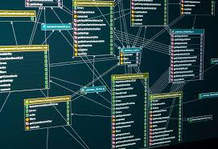

SELAMAT DATANG DI WEBSITE ADMINISTRASI SISTEM JARINGAN SMK NEGERI 1 BENGALON
SELAMAT DATANG DI WEBSITE ADMINISTRASI SISTEM JARINGAN SMK NEGERI 1 BENGALON
Database adalah koleksi data yang sistematis dan sistematis yang disimpan secara elektronik. Ini dapat berisi semua jenis data, termasuk kata, angka, gambar, video, dan file. Anda dapat menggunakan perangkat lunak yang disebut sistem manajemen database (DBMS) untuk menyimpan, mengambil, dan mengedit data.
Basis data performa tinggi sangat penting untuk setiap organisasi. Basis data mendukung operasi internal perusahaan dan menyimpan interaksi dengan pelanggan serta pemasok. Basis data juga menyimpan informasi administratif dan data yang lebih khusus, seperti model teknik atau ekonomi. Contohnya termasuk sistem perpustakaan digital, sistem reservasi perjalanan, dan sistem inventaris. Berikut ini adalah beberapa alasan mengapa basis data itu sangat penting.
Apa saja tipe-tipe basis data? Anda dapat mengklasifikasikan basis data sesuai dengan kasus penggunaan, tipe data, dan metode penyimpanan data. Berikut adalah tiga contoh cara untuk mengklasifikasikan basis data: Berdasarkan isinya, seperti teks dokumen, statistik, atau objek multimedia Berdasarkan area aplikasinya, seperti akuntansi, film, atau manufaktur Berdasarkan aspek teknisnya, seperti struktur basis data atau tipe antarmukaPemahaman yang kuat tentang database adalah landasan utama bagi setiap web developer maupun web programmer, dalam membuat sebuah aplikasi berbasis website. Karenanya, Rumahweb akan membuat sebuah series journal tentang belajar SQL database untuk pemula, mulai dari membahas pengertian hingga merancang database untuk website. Simak informasi berikut ini. Dalam era kontemporer seperti sekarang, terjadi kemajuan teknologi yang sangat cepat. Penyimpanan data sefleksibel dan sepraktis mungkin dibutuhkan, agar proses pertukaran dan pengolahan data menjadi lebih cepat dan pemanfaatan teknologi menjadi lebih maksimal. Saat ini, umumnya Data disimpan dalam format digital yang biasanya diorganisasi ke dalam database atau basis data. Salah satu perangkat lunak pengelola database yang umum digunakan adalah MySQL. Karenanya, dalam series belajar sql database ini kami menggunakan MySQL yang merupakan DBMS paling populer di dunia serta memiliki kompatibilitas yang tinggi.